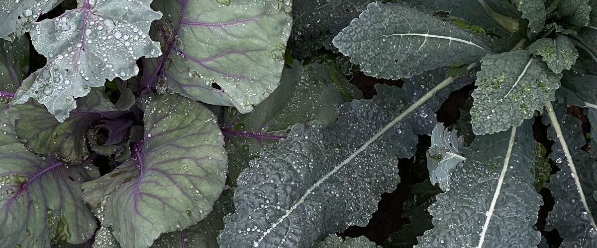

When to plant kale in Baker City, OR
Start kale from seed indoors Mar 16–30, then plant the young plants in the garden in Baker City Apr 27 – Jun 8. For a fall harvest, plant again Jul 7–21.
- Difficulty
- Easy
- Sun
- Full sun to part shade
- Spacing
- 18 inches apart
- Planting depth
- Plant starts at the depth they grew in the pot
- Frost
- Handles light frost
- First harvest
- About 60 days after planting
Why these dates
Baker City's typical last spring frost is May 25. As a cool-season crop that handles light frost, this crop can go in about 4 weeks before that.
High desert and mountains. Central and high eastern Oregon. Frost is possible almost any month. Use row covers, wall-o-water or cloches for warm crops, and choose short-season varieties.
How to grow kale in Baker City
- Start seeds indoors Mar 16–30 in trays or small pots under a grow light or in your sunniest window. Or skip this step and buy young plants (starts) at a garden center.
- Harden off the young plants: about a week before planting, set them outside for a few hours a day, a little longer each day.
- Plant them in the garden Apr 27 – Jun 8, 18 inches apart. Plant starts at the depth they grew in the pot.
- Water deeply once or twice a week rather than a little every day, and mulch once the soil is warm.
- Plant again Jul 7–21 for a fall harvest.
- Harvest: Pick the lower leaves and let the top keep growing. Plants often produce from fall through spring west of the Cascades.
Key numbers
- 6.0–7.5Soil pH
- Low teens °FHardy to
- Makes leaves sweeterFrost
- Lime to pH 7.2Clubroot fix
- Top 5–6 leavesLeave on plant
- 1–2 weeks coldKeeps
How it works
The plant biology behind the advice above, in plain language.
Why frost makes kale sweeter
As temperatures drop, kale converts some of its starch into sugars, which act as a natural antifreeze in its cells. The result is noticeably sweeter, milder leaves after a few frosts. Hardy varieties like Winterbor and Red Russian survive into the low teens or below, and west of the Cascades kale often produces all winter.
Soil and clubroot
Kale grows best in fertile soil with a pH of about 6.0 to 7.5. In the Northwest, the main soil threat is clubroot, a soilborne disease of the whole cabbage family that causes swollen, distorted roots and wilting plants. It thrives in acidic, wet soil, and its spores survive in the ground for many years.
If clubroot has shown up before, raise the pH to about 7.2 with lime at least a month before planting, improve drainage, and don't plant any cabbage-family crops in that spot for several years. Start with clean transplants and don't move soil from infected beds.
Feeding and water
Kale is a leaf crop, so it responds well to nitrogen. Mix compost and a balanced fertilizer into the bed, then side-dress with a little more nitrogen a month or so after planting. Keep the soil evenly moist; drought makes leaves tough and strong-flavored.
Pests
Cabbage aphids form gray, waxy colonies, often under leaves and in the growing tip. Blast them off with water, remove badly infested leaves, and let ladybugs and parasitic wasps do the rest. The green caterpillars are imported cabbageworms, the larvae of the white butterflies seen over gardens in summer. Row cover from planting day keeps the butterflies from laying eggs; Bt, a bacterial spray that affects only caterpillars, controls them if they're already there.
Flowering in spring
Kale is a biennial. After a winter of cold, it flowers the next spring. Before the flowers open, the tender shoots (often sold as kale raab) are sweet and good to eat. Once flowers open, pull the plant and compost it.
Harvest and storage
Pick the lowest, oldest leaves first and leave at least five or six leaves on top so the plant keeps growing. Kale stores best near freezing with high humidity, so keep it bagged in the fridge, where it lasts one to two weeks.
Common questions
When is the last frost in Baker City, OR?
Typically May 25. In 9 years out of 10, frost is over by June 16. These are 1991–2020 NOAA climate normals for Baker City Municipal Airport.
Is it too late to plant kale in Baker City?
The spring planting window runs through June 8. If you miss it, plant again for fall from July 7 to July 21.
When should I start kale from seed indoors in Baker City?
March 16 to March 30, which is 6 to 4 weeks before the April 27 planting date. Or buy young plants at a garden center instead.
Does frost make kale sweeter?
Yes. In cold weather kale turns some of its starches into sugars, which protect its cells from freezing. Leaves picked after a few frosts taste noticeably sweeter and milder.
Why is my kale flowering in spring?
Kale is a biennial, so after a winter of cold it goes to flower the next spring. Eat the tender flower shoots before they open, then pull the plant and start new kale for the year.
How do I get rid of aphids on kale?
Spray them off with a strong stream of water, remove badly infested leaves, and leave the ladybugs and tiny parasitic wasps that feed on them. Plants that are watered and fed well tolerate aphids better.
Also plant in Baker City around the same time
Planting dates for kale in nearby areas
- Pendleton, OR Apr 1 – May 13
- The Dalles, OR Apr 1 – May 13
- Hood River, OR Apr 1 – May 13
- Hermiston, OR Apr 1 – May 13
- Ontario, OR Apr 1 – May 13
- La Grande, OR Apr 15 – May 27